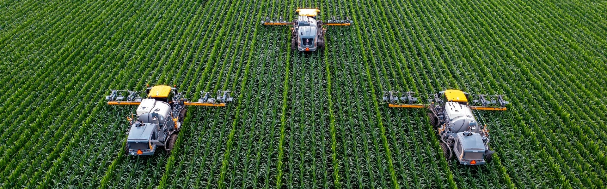
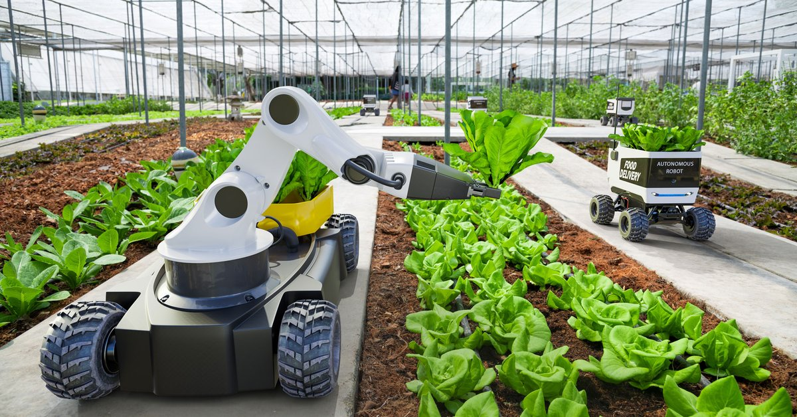
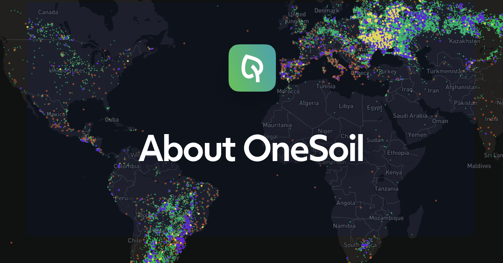

Artificial Intelligence in AgricultureAgriculture plays a crucial role in the economic sector for each country. Population around the world is increasing day by day, and so is the demand for food. The traditional methods that are used by the farmers are not sufficient to fulfil the need at the current stage. Hence, some new automation methods are introduced to satisfy these requirements and to provide great job opportunities to many people in this sector. Artificial Intelligence has become one of the most important technologies in every sector, including education, banking, robotics, agriculture, etc. In the agriculture sector, it is playing a very crucial role, and it is transforming the agriculture industry. AI saves the agriculture sector from different factors such as climate change, population growth, employment issues in this field, and food safety. Today's agriculture system has reached at a different level due to AI. Artificial Intelligence has improved crop production and real-time monitoring, harvesting, processing and marketing. Different hi-tech computer-based systems are designed to determine various important parameters such as weed detection, yield detection, crop quality, and many more. 
In this topic, we will discuss the impact and application of Artificial Intelligence on Agriculture, along with the challenges in adoption of AI. Challenges in Agriculture using traditional methodsBefore understanding AI impact and application in Agriculture, we must understand what are the challenges in agriculture by using traditional methods, which are given below:
Applications of Artificial Intelligence in Agriculture
As with the traditional methods of Agriculture, there are so many challenges that farmers would face. To solve these challenges, AI is being widely used in this sector. For agriculture, Artificial Intelligence has become a revolutionary technology. It helps the farmers by yielding healthier crops, control pests, soil monitoring, and many more ways. Below are some key applications of Artificial Intelligence in the Agriculture sector: 1. Weather & price Forecasting: 
As we have discussed in challenges that it is difficult for the farmers to take the right decision for harvesting, sowing seeds, and soli preparing due to climate change. But with the help of AI weather forecasting, farmers can have information on weather analysis, and accordingly, they can plan for the type of crop to grow, seeds to sow, and harvesting the crop. With price forecasting, farmers can get a better idea about the price of crops for the next few weeks, which can help them to get maximum profit. 2. Health Monitoring of Crops: 
The quality of crop widely depends on the type of soil and nutrition of the soil. But with the increasing rate of deforestation, the soil quality is degrading day by day, and it is hard to determine it. To resolve this issue, AI has come up with a new application called Plantix. It was developed by PEAT to identify the deficiencies in soil, including plant pests and diseases. With the help of this application, farmers can get an idea to use better fertilizer which can improve the harvest quality. In this app, AI's image recognition technology is used by which farmers can capture the images of plants and get information about the quality. 3. Agriculture Robotics: 
Robotics is being widely used in different sectors, mainly in manufacturing, to perform complex tasks. Nowadays, different AI companies are developing robots to be employed in the Agriculture sector. These AI robots are developed in such a way that they can perform multiple tasks in farming. AI robots are also trained in checking the quality of crops, detect and controlling weeds, and harvesting the crop with faster speed compared to a human. 4. Intelligent Spraying 
With AI sensors, weed can be detected easily, and it also detects weed affected areas. On finding such areas, herbicides can be precisely sprayed to reduce the use of herbicides and also saves time and crop. There are different AI companies that are building robots with AI and computer vision, which can precisely spray on weeds. The use of AI sprayers can widely reduce the number of chemicals to be used on fields, and hence improves the quality of crops and also saves money. 5. Disease Diagnosis 
With AI predictions, farmers can get knowledge of diseases easily. With this, they can easily diagnose diseases with proper strategy and on time. It can save the life of plants and farmer's time. To do this, firstly, images of plants are pre-processed using computer vision technology. This ensures that plant images are properly divided into the diseased and non-diseased parts. After detection, the diseased part is cropped and send to the labs for further diagnosis. This technique also helps in the detection of pests, deficiency of nutrients, and many more. 6. Precision Farming Precision farming is all about "Right place, Right Time, and Right products". The precision farming technique is a much accurate and controlled way that can replace the labour-intensive part of farming to perform repetitive tasks. One example of Precision farming is the identification of stress levels in plants. This can be obtained using high-resolution images and different sensor data on plants. The data obtained from sensors is then fed to a machine learning model as input for stress recognition. AI start-ups in AgricultureBelow is the list of popular start-ups in Agriculture: 1. Prospera: It is an Israeli start-up founded in the year 2014. This company creates intelligent solutions for efficient farming. It develops cloud-based solutions that collect all the data from the fields such as soil/water, aerial images, etc. and combine this data with an in-field device. This device is known as the Prospera device, and it makes insights from this data. The device is powered by various sensors and technologies such as computer vision. 2. Blue River technology: 
Blue-River technology is a California-based start-up that has started in the year 2011. It develops next-generation agriculture equipment using AI, computer vision, and robotics technology. This equipment identifies individual plants using computer vision, ML decides action, and with robotics, the action is performed. This helps the farmers to save costs and chemicals in farming. 3. FarmBot: Farmbot is an open-source CNC precision farming machine and software package, which is developed to grow crops by anyone at their own place. The complete product "Farmbot" is available at a price of $4000, and it enables anyone to do complete farming ranging from seed plantation to weed detection on their own with the help of a physical bot and open-source software system. It also provides a webapp that can be downloaded on any smartphone or computer system and allows us to manage farming from any place at any time. 4. Fasal: The use of AI in the agriculture industry is increasing day by day in various places across the world. However, agriculture holdings per farmer in the poorer region is less compared to the rich region, which is advantageous for automated monitoring as it requires a lesser number of devices with low bandwidth and size to capture the complete agriculture data. In this field, the Indian start-up Fasal is working. It uses affordable sensors and AI to provide real-time data and insights to farmers. With this, farmers can be benefitted from real-time, actionable information relevant to day-to-day operations at the farm. The company's devices are easy to implement for small places. They are developing AI-enabled machines to make precision farming that can be accessible by every farmer. 5. OneSoil: Onesoil is an application that is designed to help farmers to take a better decision. This app uses a machine-learning algorithm and computer vision for precision farming. It monitors the crops remotely, identifies problems in the fields, check the weather forecast, and calculate nitrogen, phosphorus, and potassium fertilizer rate, etc. Benefits and Challenges of AI in agricultureAdvantages
Predictive analytics is really a boon for the agriculture industry. It helps the farmers solving the key challenges of farming, such as analysing the market demands, price forecasting, and finding optimal times for sowing and harvesting the crop. Moreover, AI-powered machines can also determine soil and crop health, provides fertilizer recommendations, monitor the weather, and can also determine the quality of crop. All such benefits of AI in agriculture enable the farmers to make better decisions and do efficient farming.
Precision farming using AI-enabled equipment helps the farmers to grow more crops with lesser resources and cost. AI provides the real-time insights to farmers that enables them to take proper decision at each stage of farming. With this correct decision, there is less loss of products and chemicals and efficient use of time and money. Moreover, it also allows the farmers to identify the particular areas that need irrigation, fertilization, and pesticide treatment, which saves excessive use of chemicals on the crop. All these things sum up and result in reduced use of herbicides, better crop quality and high profit with fewer resources.
There has always been an issue of labour shortage in the agriculture industry. AI can solve this issue with automation in farming. With AI and automation, farmers can get work done without having more people, and some examples are Driverless tractors, smart irrigation and fertilizing systems, smart spraying, vertical farming software, and AI-based robots for harvesting. AI-driven machines and equipment are much faster and accurate compared to human farmhands. Challenges of AI adoption in AgricultureBy seeing the advantages of AI for sustainable farming, implementing this technology may seem like a logical step for every farmer. However, there are still some serious challenges that everyone knows, which are as follows:
Although there are lots of benefits of using AI in agriculture, yet people are not familiar with the use of AI-enabled solutions and equipment across most of the world. To solve the issues, AI companies should provide the basic equipment to farmers, and once they get familiar with them, then provide them with advanced machines.
The adoption of AI and emerging technologies in agriculture for developing countries can be a challenging task. It will be very difficult to sell such technologies in the areas where there is no such agricultural technology is being taken into use. In such areas, to use these technologies, farmers need someone's help.
As there are still no clear regulations and policies for using AI, it may raise various legal issues. Further, due to the use of software and the internet, there may also be some privacy and security issues such as cyberattacks and data leaks. All these issues can create a big problem for farm owners or farmers. Conclusion:The future of AI in farming largely depends on the adoption of AI solutions. Although some large-scale researches are in progress and some applications are already in the market, yet industry in agriculture is underserved. Moreover, creating predictive solutions to solve a real challenge faced by farmers in farming is still in progress at an early stage. Feedback
|